Summer 2021
Aris
A trading & investment literacy platform
Opporunity Space /
There are more young investors now than ever, and more are soon to join / but it can be challenging to get started with investing.
There are a ton of videos and sites with great information, but no cohesive and tangible guide to get started with investing. Aris’s objective is to educate users in financial literacy to help them get started with investing through a personalized onboarding process, curated portfolio assistance, and UX-driven learning.
We're eliminating the need to exit a trading platform and open 20 different tabs to get the answers you're looking for: By pressing and holding various elements, users can get "stories" on what that element means in both TL;DR and more complex terms. Finance is complicated and has a steep learning curve, but with Aris, we can make the entry into learning a little easier and quicker.
Team Members
Arshin Jain
My Roles
Concept
UX Research
UIUX Design
Video
Tools
Figma
Illustrator
After Effects
Timeline
July-Dec 2021


Design Process


 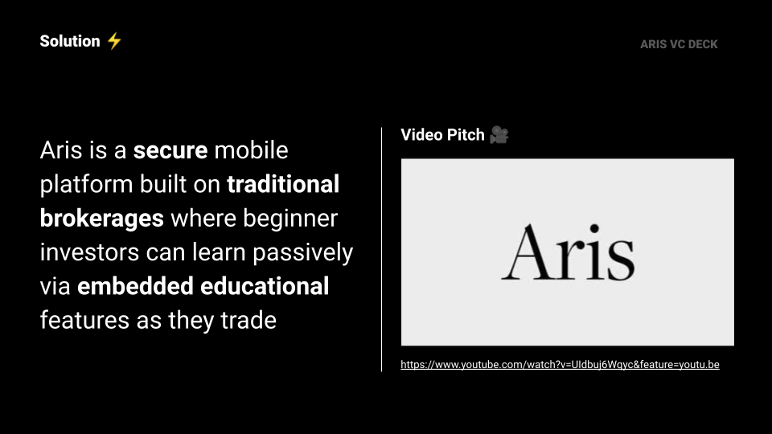
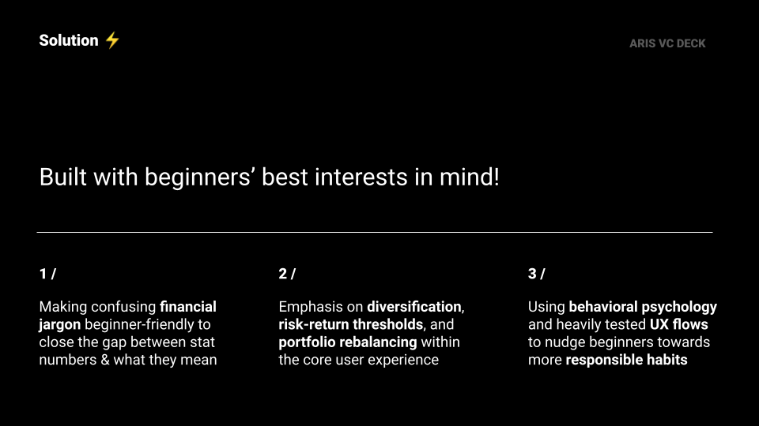
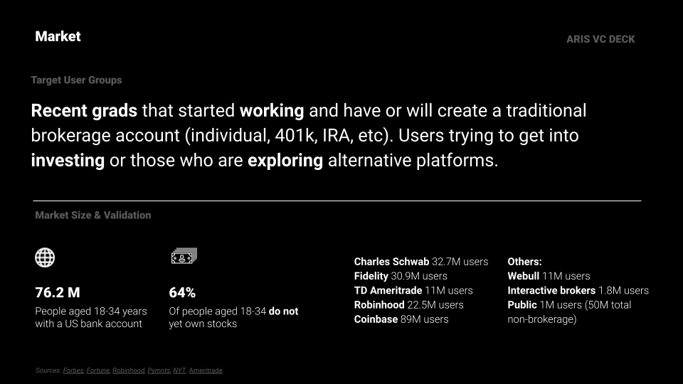
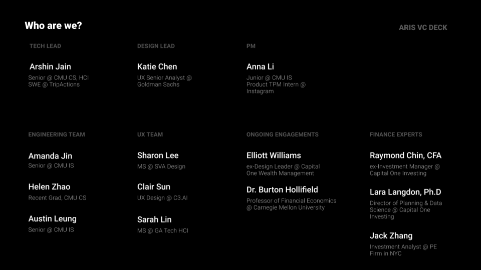
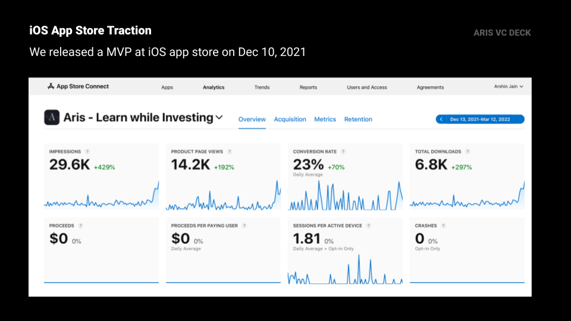
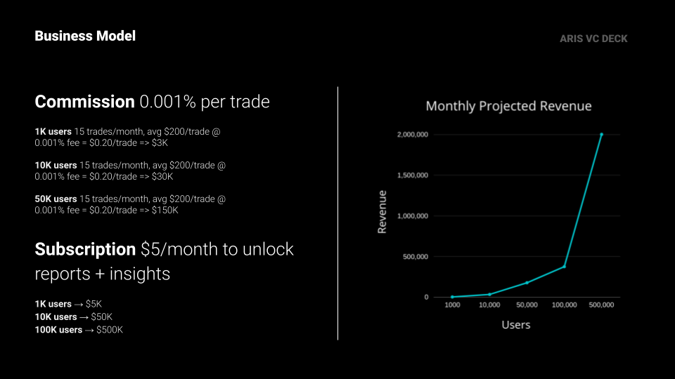
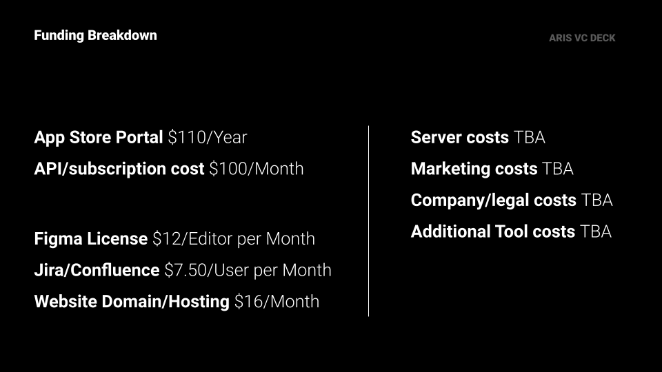
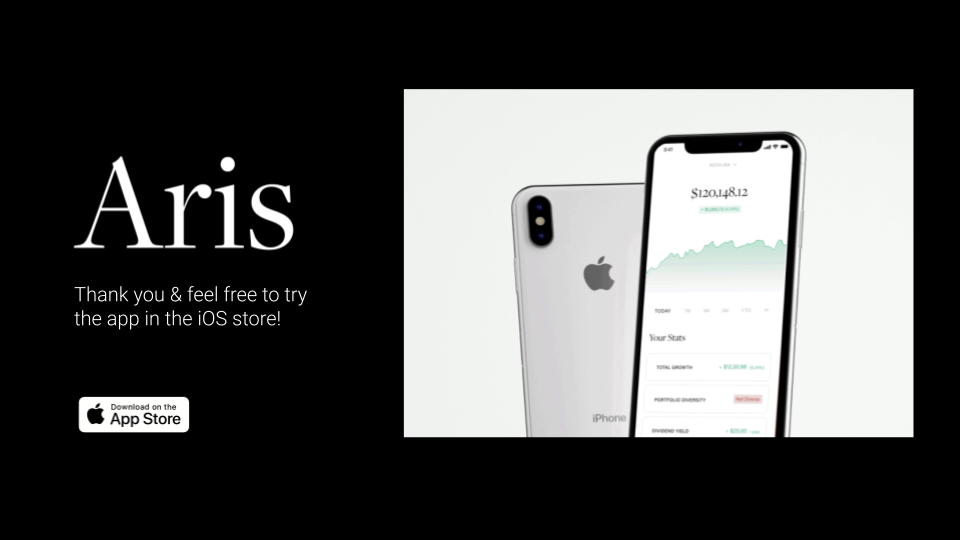
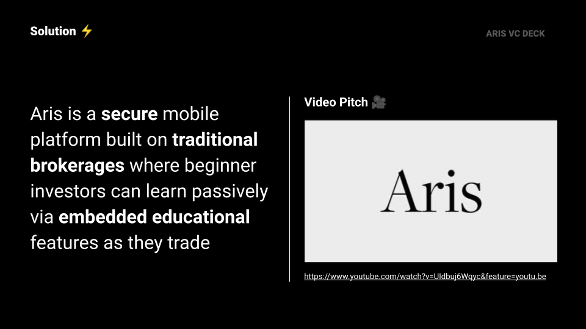
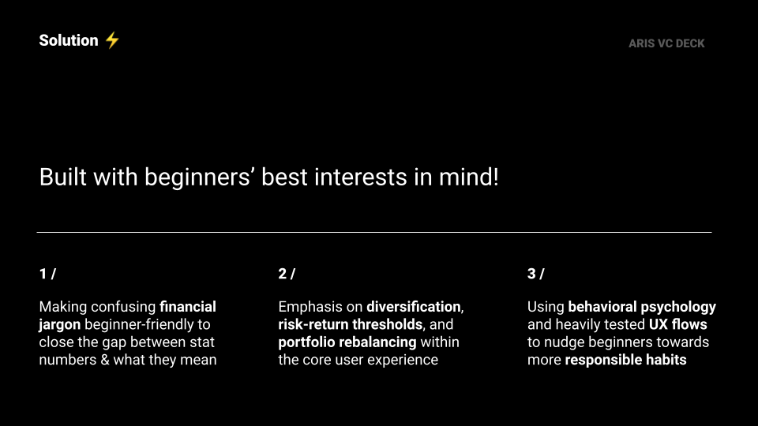
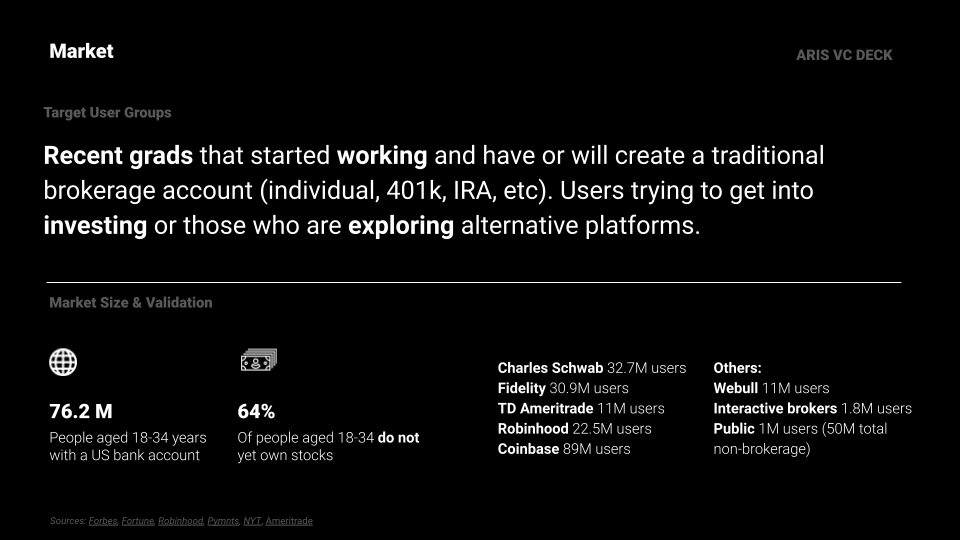
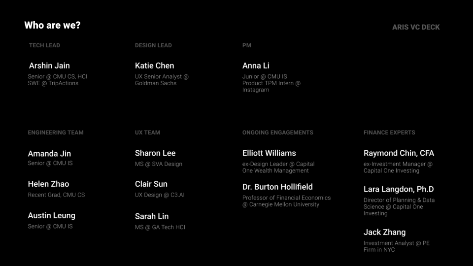
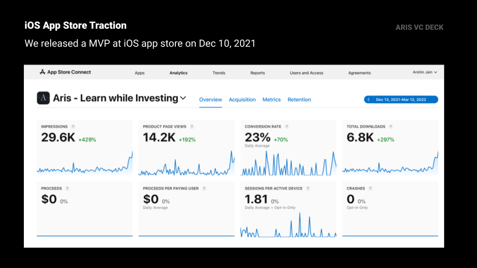
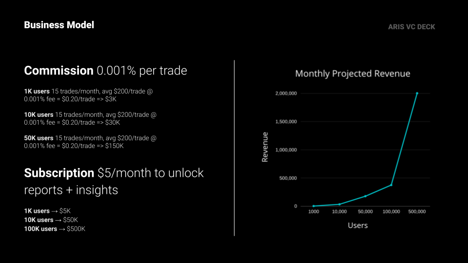
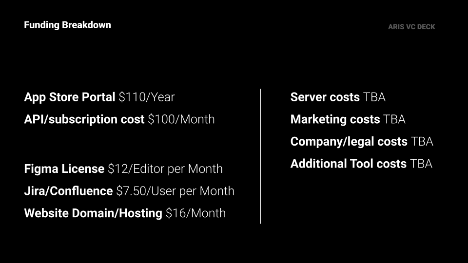
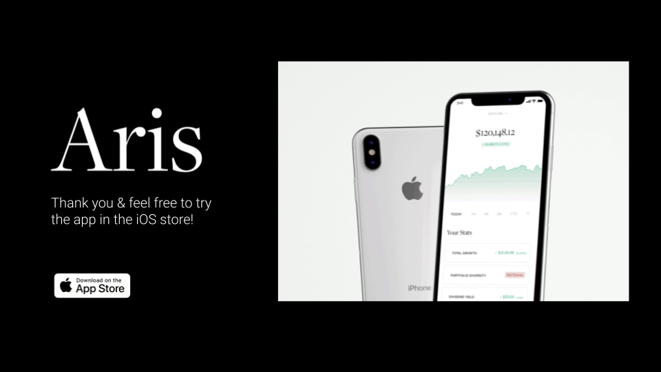